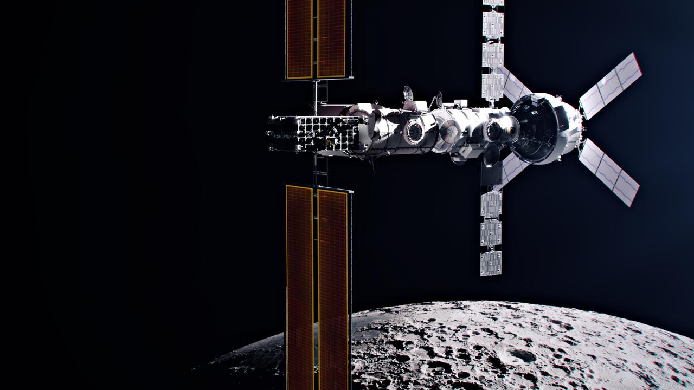

Artemis IV: The first landing
NASA’s first crewed Moon landing under Artemis is planned for 2028. After launching on the SLS rocket from Kennedy Space Center in Florida, the crew will move from Orion into a commercial human landing system that carries them to the surface.
NASA is pursuing two paths. SpaceX’s Starship would refuel in Earth orbit, meet Orion, and carry the spacecraft toward the Moon. Blue Origin’s Blue Moon Mark 2 would be pushed toward the Moon by transfer stages, then meet Orion in a closer lunar orbit before descending.
For the first moonwalks, Axiom Space is developing a lighter “Sortie suit” that weighs roughly half as much as its primary suit.
- Launch
- 2028
- Vehicles
- SLS rocket, Orion spacecraft, and a commercial lander from SpaceX or Blue Origin
- Status
- Planned